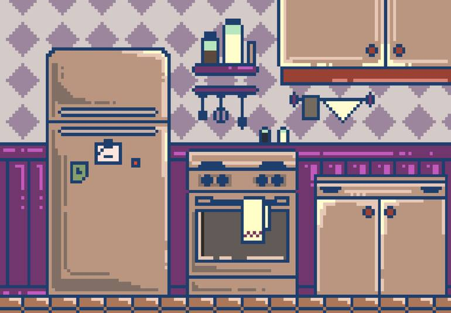

<div class="mission">
  
    <div class="container">
        
        <div class="text3">
            <div class="details"><br><br>A votre avis, la consommation de votre réfrégirateur <br><br>
                varie t-elle selon si il est plus ou moins rempli ?
            </div>
        </div>
        <div class="answers answers2">
            <a>
                <p class="answer one" (click)="reward(15, 30)">Oui</p>
            </a>
            <a>
                <p class="answer two" (click)="reward(0, -20)">Non</p>
            </a>
        </div>
    </div>
    <div class="modal" id="modal">
        <div class="box">
            <div class="text">
                <h1>Information</h1>
                Lorsque votre réfrégirateur est trop rempli ou trop vide, il consommera plus. <br>
            </div>
            <a [routerLink]="['/missionSix']" routerLinkActive="active" >
                <p class="btn-next">Suivant</p>
            </a>
        </div>
    </div>
</div>
